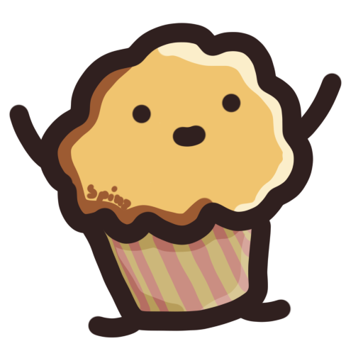

|

0 100 SpeckCoins iFlyspeck CloneKing Flyspeck II had many clones, mostly for decoration before the Sixth Great War. When the kingdom was invaded, the clones were animated and used as expendible weapons against the cupcakes. Even after the weapon of mass destruction was unleashed, they remained sentient, probably due to the fact that Flyspeck II himself was still alive, having hidden underground. Producing 0 SpeckCoins/s, 10 SpeckCoins/s each |
0 0 SpeckCoins iCloning MachineDuring the war, progenation machines were suggested to combat the deadly wave of cupcakes. They were eventually rejected, due to the risk that they could be stolen by the cupcakes for their own purposes, but the war council decided to use giant cloning machines to create clones that could fight, but were not alive. Producing 0 Flyspeck Clones/s, 1 Flyspeck Clone/s each |
0 0 SpeckCoins i3D Printer3D printers were used in the war to manufacture weapons in the desperate fight against the cupcakes. They were the last resort after ore mines were taken over by the cupcakes, and oil reserves were the only resource left to the muffins. Producing 0 Cloning Machines/s, 1 Cloning Machine/s each |
0 0 SpeckCoins iFactoryFactories were common in the muffin kingdom even before the Fourth Great War, in which the kingdom's leadership was toppled and replaced with the notable dictator Mussana IV. Even with the great depression that followed, the factories remained important in keeping the kingdom running. Many more factories were built in the reign of Flyspeck the Great, who dedicated a large plain to building factories, now dubbed "Factory Field". Producing 0 3D Printers/s, 1 3D Printer/s each |
0 0 SpeckCoins iIndustryThe structure was simple in the Muffin Kingdom. The industry owned the factories, and the people owned the industry. The industry was a powerful organisation, and they were established shortly after the end of the Second Great War. They were one of the oldest ideas of modern Muffinkind, and reached through to every facet of life. Producing 0 Factories/s, 1 Factory/s each |
SpeckCoins: 100